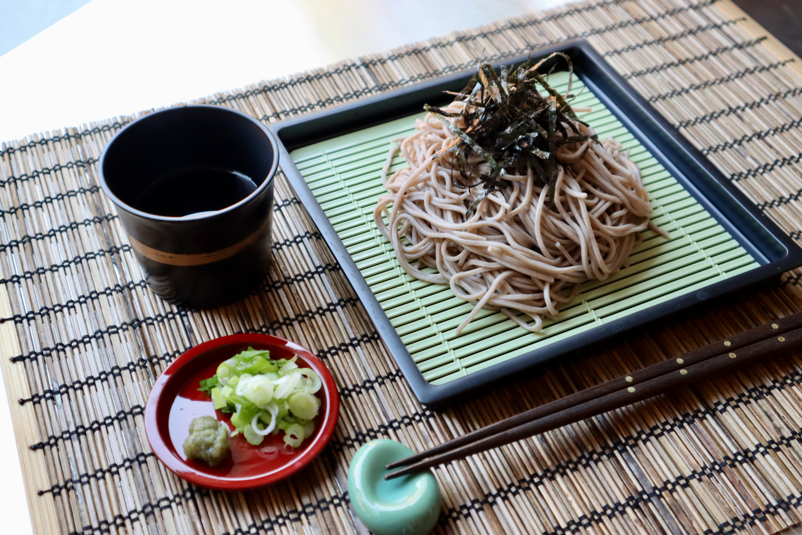

Zaru Soba

Light and refreshing, Zaru Soba (Cold Soba Noodles) will be your summer go-to staple. Ten minutes is all you need to whip up this delicious Japanese chilled noodle dish.
Is there any specific hot-weather food that you enjoy in your culture? In Japan, during the unbearable hot and humid summer, the classic cold Japanese noodle, Zaru Soba (ざるそば) is the perfect dish to cool down!
Ingredients:
- soba noodles
- mentsuyu
- nori seaweed
- cold water
- wasabi(optional)
Instructions:
- Boil a lot of water in a large pot. Unlike pasta, you do not add salt to the cooking water. Add 14 oz dried soba noodles (buckwheat noodles) to the boiling water, distributing them around the pot in a circular pattern to separate the noodles from each other. Cook the soba noodles according to the package instructions. Stir the noodles occasionally so they don’t stick to each other. The noodles are done when they are just tender; do not overcook. Before you drain the noodles, reserve 1 to 1½ cups of the cooking water called sobayu (read how to use sobayu in the blog post).
- Drain the soba noodles in a sieve and rinse them under cold running water with your hands to get rid of the excess starch. This is a very important step to keep the noodles from sticking to each other.
- Shake the sieve to drain the water completely. Then, transfer the noodles to a large bowl of iced water. Chill the noodles for 30 seconds, drain well, and set aside.
- To serve the noodles, place bamboo sieves or mats over individual plates (to catch the draining water from the noodles). Place one serving of soba noodles on each mat and garnish with shredded nori seaweed (kizami nori) on top.
- Prepare the soba dipping sauce using a 1-to-3 ratio of homemade mentsuyu to water. Combine 6 Tbsp mentsuyu (concentrated noodle soup base) and 1⅛ cups iced water in a measuring cup and check the taste. If it‘s salty, add more water, and if it‘s too dilute, add more mentsuyu. Divide the dipping sauce into individual cups.
- Chop 2 green onions/scallions and put on individual small plates. Add a bit of wasabi to the plates. Serve with the soba noodles and individual cups of dipping sauce.
- For a more substantial meal, enjoy Zaru Soba with a variety of vegetables like mushrooms, carrots, daikon radish, and lettuce/cabbage-based salads. It‘s also common to serve Zaru Soba with tempura, called tenzaru (天ざる). Try it with Vegetable Tempura and Shrimp Tempura.